2
오늘 공부하지 않을 때는 오늘 쉬기를 누릅니다. 특정 과업만 건너뛸 때는 기록 칸의 과업 목록에서 그 과업을 고른 뒤 선택 과업 스킵을 누릅니다. 쉬거나 건너뛴 공부는 사라지지 않고 뒤 계획으로 넘어갑니다.

Challenge Master는 공부할 범위와 하루에 쓸 수 있는 시간을 적으면, 오늘 할 공부와 앞으로 7일의 계획을 나눠 주는 프로그램입니다. 공부한 시간을 기록하면 다음 계획에 반영됩니다. 모든 기록은 이 PC 안에만 저장되고 인터넷으로 보내지지 않습니다.
Node.js나 Python 같은 다른 프로그램은 따로 설치하지 않아도 됩니다. 필요한 것이 설치파일 안에 모두 들어 있습니다.
Windows 11(Intel·AMD 프로세서)에서 시험했습니다. Windows 10, ARM 칩(Snapdragon 등) PC, S 모드 PC는 아직 시험 전입니다. 해당하면 설치 전에 운영자에게 알립니다.
이 시범판은 코드 서명이 없는 프로그램입니다. Windows의 스마트 앱 컨트롤이 켜져 있으면 설치가 막힙니다. 설치하기 전에 다음 순서로 확인합니다.
작업 표시줄의 검색창에 Windows 보안을 입력하고 엽니다.
왼쪽 목록에서 앱 & 브라우저 컨트롤을 누르고, 스마트 앱 컨트롤 설정을 누릅니다.
선택된 항목을 확인합니다.
| 표시된 상태 | 할 일 |
|---|---|
| 끄기 | 그대로 2절로 넘어갑니다. |
| 켜기 또는 평가 모드 | 설치하지 말고 표시된 상태를 운영자에게 알립니다. 이 설정을 직접 바꾸지 마십시오. |
| 항목이 보이지 않음 | 화면을 캡처해 운영자에게 보냅니다. |
운영자가 보낸 구글 드라이브 링크를 엽니다.
Challenge-Master-Setup-0.6.2-win-x64.exe 파일을 찾아 다운로드 단추(아래쪽 화살표 모양)를 누릅니다. 파일은 보통 다운로드 폴더에 저장됩니다.
브라우저나 구글 드라이브가 "위험할 수 있다"는 경고를 띄우거나 다운로드를 보류하면, 그 화면을 캡처해 운영자에게 보내고 진행을 멈춥니다.
작업 표시줄의 노란 폴더 아이콘(또는 키보드의 Windows 키와 E를 함께)으로 파일 탐색기를 엽니다. 왼쪽의 다운로드 폴더에서 받은 설치파일을 두 번 누릅니다.
Windows가 서명 없는 프로그램이라며 파란색 창을 띄울 수 있습니다. 창 안의 추가 정보를 누르면 실행 단추가 나타나고, 그 단추를 누르면 설치가 이어집니다.
이 창은 PC에 따라 나타나지 않기도 합니다. 창의 모양이나 글자가 이 설명과 다르면 아무것도 누르지 말고 화면을 캡처해 운영자에게 보냅니다.
Challenge Master 설치를 시작합니다. 화면이 나오면 다음 >를 누릅니다.
설치 위치 선택 화면에서는 폴더를 바꾸지 말고 오른쪽 아래의 설치를 누릅니다. 관리자 암호는 필요하지 않습니다.
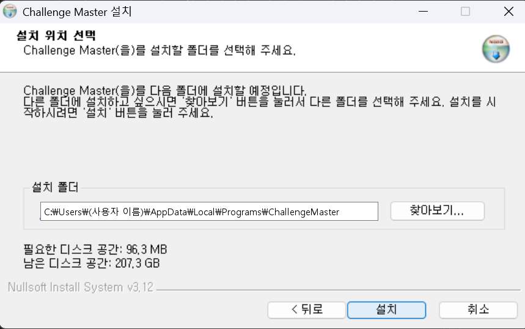
설치가 끝나면 다음 >를 누르고, 마지막 화면에서 마침을 누릅니다.
작업 표시줄 가운데의 Windows 로고 모양 시작 단추를 누르고 모든 앱을 누릅니다.
목록에서 Challenge Master 폴더를 찾아 그 안의 Challenge Master를 누릅니다. 시작 단추를 누른 뒤 Challenge Master를 입력해 검색해도 됩니다.
몇 초 뒤 기본 웹 브라우저에 프로그램 화면이 열립니다. 창이 따로 뜨지 않고 브라우저 안에서 쓰는 프로그램입니다.
브라우저 주소창의 주소는 127.0.0.1로 시작합니다. 이 PC 안에서만 동작하는 주소이며, 뒤의 숫자는 열 때마다 바뀝니다. 즐겨찾기에 저장하지 말고 항상 시작 메뉴에서 여십시오.
처음 열면 연습용(합성 데모) 계획이 보입니다. 아래 칸에 자신의 자료를 등록하면 그때부터 자신의 계획이 만들어집니다.
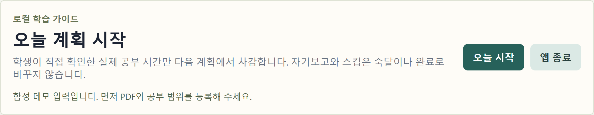
화면을 조금 내려 내 PDF로 공부 계획 만들기의 칸을 채웁니다.
칸마다 예시 글과 숫자가 미리 들어 있습니다(공부 범위 칸의 「1회독 핵심 범위…」「복습 문제 확인…」 두 줄 등). 공부 범위 칸의 예시 두 줄은 모두 지우고 자신의 내용만 적습니다. 다른 칸의 숫자도 자신의 값으로 바꿉니다.
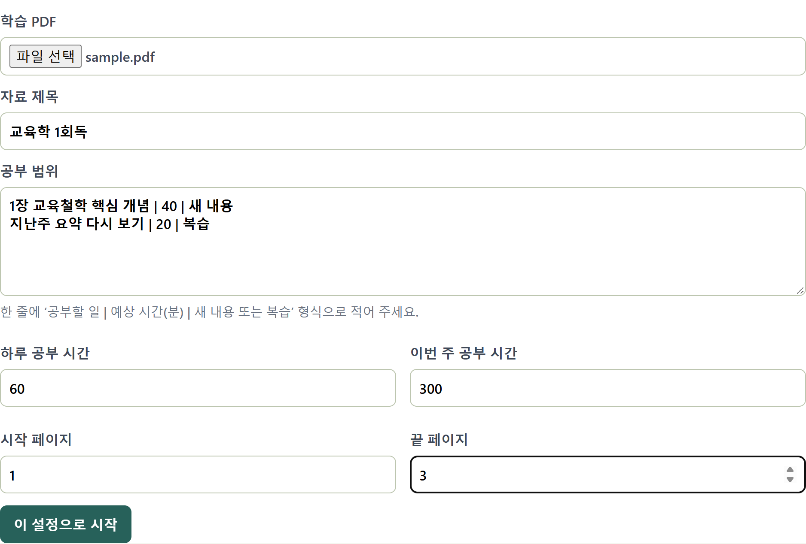
| 칸 | 적는 방법 |
|---|---|
| 학습 PDF | 파일 선택을 눌러 공부할 PDF를 고릅니다. 약 30MB보다 큰 PDF는 등록되지 않을 수 있습니다. |
| 자료 제목 | 알아보기 쉬운 이름을 적습니다. 예: 교육학 1회독 |
| 공부 범위 | 한 줄에 하나씩 공부할 일 | 예상 시간 | 새 내용 또는 복습으로 적습니다. 예상 시간은 40처럼 숫자만 적습니다(「분」을 붙이지 않습니다). 세 번째 칸에는 새 내용이나 복습만 적습니다. 세로 막대(|)는 원화 기호(₩)가 새겨진 키를 Shift와 함께 누르면 입력됩니다. 최대 30줄입니다. |
| 하루 공부 시간 | 하루에 공부할 수 있는 시간을 분으로 적습니다. 예: 2시간이면 120 |
| 이번 주 공부 시간 | 오늘부터 7일 동안 쓸 수 있는 시간을 분으로 적습니다. 하루 공부 시간 × 7보다 작게 적으면 뒤쪽 날은 쉬는 날로 잡힙니다. |
| 시작 페이지 / 끝 페이지 | PDF에서 글자를 뽑아 둘 쪽의 범위입니다. 책에 인쇄된 쪽 번호가 아니라 PDF 뷰어에 표시되는 쪽 순서로 적습니다. 한 번에 30쪽까지 됩니다. |
다 채웠으면 이 설정으로 시작을 누릅니다. 잠시 뒤 PDF 추출 검토에 쪽마다 상태가 표시됩니다.
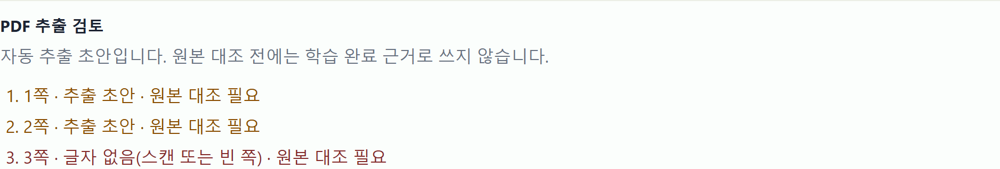
| 표시 | 뜻 |
|---|---|
| 추출 초안 · 원본 대조 필요 | 그 쪽의 글자를 뽑아 두었습니다. 이 판에는 원본과 대조를 마쳤다고 표시하는 기능이 없으므로 그대로 두면 됩니다. |
| 글자 없음(스캔 또는 빈 쪽) | 글자를 선택할 수 없는 스캔 PDF이거나 빈 쪽입니다. 이런 쪽에서는 글자를 뽑지 못합니다. 계획 만들기에는 영향이 없습니다. |
| 추출 실패 | 그 쪽을 읽지 못했습니다. 화면을 캡처해 운영자에게 보냅니다. |
이 설정으로 시작을 다시 누르면 그동안의 계획 기록은 보관 파일로 옮겨지고, 새 계획은 0분부터 시작합니다. 자료나 공부 범위를 바꿀 때만 다시 등록하십시오.
화면 맨 위의 오늘 시작을 누릅니다. 이 단계를 거쳐야 공부 시간을 기록할 수 있습니다. 누르면 단추 이름이 남은 과업 다시 배정으로 바뀝니다.
맨 위에는 지금 할 공부가 큰 글씨로 나옵니다. 화면을 아래로 내려 설정 칸과 기록 칸을 지나면 오늘 배정에 오늘 할 일이 순서대로 나옵니다.
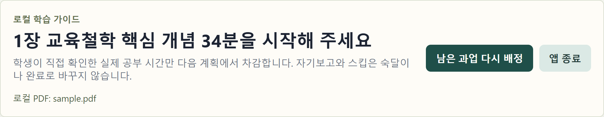
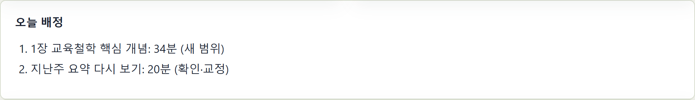
실제 공부 시간 기록에서 과업 목록을 눌러 방금 공부한 일을 고릅니다.
실제 공부한 분에 공부한 시간을 분으로 적고 기록을 누릅니다. 배정보다 오래 공부했으면 배정된 분까지만 적습니다. 더 큰 값을 넣으면 브라우저가 경고 말풍선을 띄웁니다.
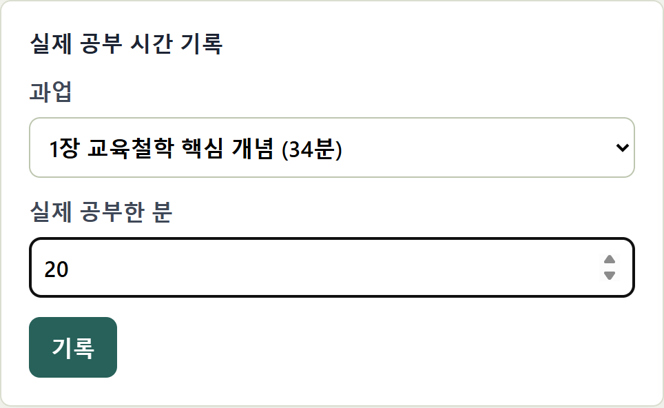
현재 상태의 확인된 공부에 기록한 시간이 더해집니다. 기록한 시간만 다음 계획에 반영됩니다.
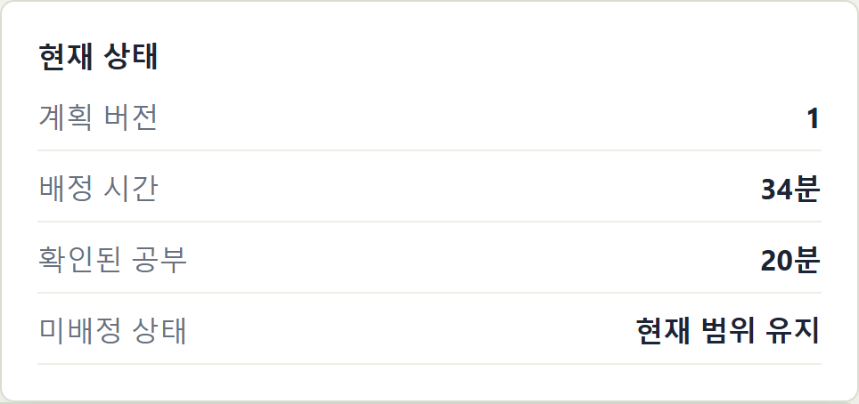
화면 맨 아래의 이번 주 예측에서는 남은 날에 어떤 공부가 배정될지 미리 볼 수 있습니다. 예정은 기록에 따라 계속 바뀝니다.
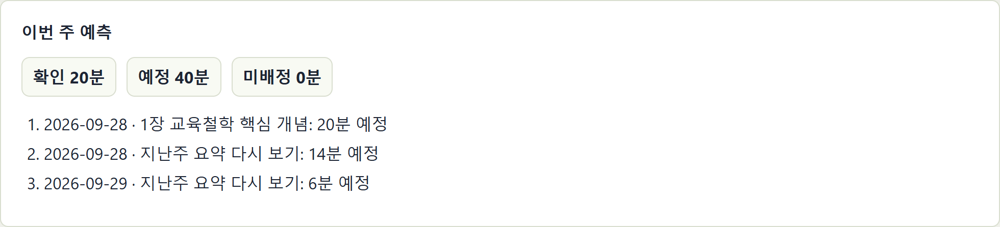
| 맨 위 큰 글씨가 이렇게 바뀌면 | 뜻 |
|---|---|
| 다음 계획 조정이 필요합니다 | 오늘 배정된 일을 모두 기록했거나 더 배정할 일이 없습니다. 오류가 아닙니다. |
| 오늘은 휴식입니다 | 오늘을 쉬는 날로 바꾼 상태입니다. |
계획보다 시간이 부족하면 오늘 가능한 시간 줄이기의 남은 가능 시간에 남은 분을 적고 다시 배정을 누릅니다. 남은 시간에 맞게 오늘 계획이 줄어듭니다.
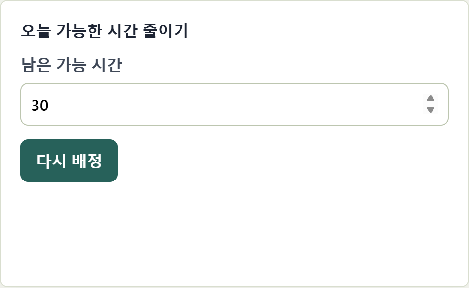
오늘 공부하지 않을 때는 오늘 쉬기를 누릅니다. 특정 과업만 건너뛸 때는 기록 칸의 과업 목록에서 그 과업을 고른 뒤 선택 과업 스킵을 누릅니다. 쉬거나 건너뛴 공부는 사라지지 않고 뒤 계획으로 넘어갑니다.
4절처럼 시작 메뉴에서 프로그램을 엽니다.
다시 열면 아래쪽 설정 칸이 예시 값으로 보이지만, 등록한 설정은 그대로입니다. 맨 위에 「로컬 PDF: (파일 이름)」이 보이면 정상입니다. 이 설정으로 시작을 다시 누르지 마십시오.
맨 위의 남은 과업 다시 배정을 먼저 눌러 그날 계획을 새로 만듭니다.
7절처럼 공부한 시간을 기록합니다.
화면 맨 위의 앱 종료를 누릅니다.
앱을 종료합니다. 창을 닫아 주세요.가 보이면 브라우저 탭을 닫습니다.
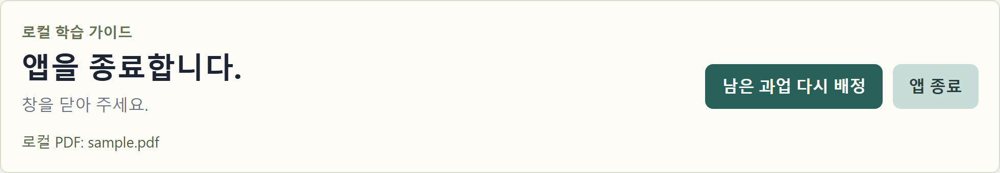
앱 종료를 누르지 않고 브라우저 탭만 닫으면 프로그램이 뒤에서 계속 실행됩니다. 시작 메뉴에서 Challenge Master를 다시 열면 같은 화면이 나오니, 거기서 앱 종료를 누르면 됩니다.
| 이런 일이 생기면 | 이렇게 합니다 |
|---|---|
| 시작 메뉴에서 눌러도 브라우저가 열리지 않는다 | 10초쯤 기다린 뒤 한 번 더 누릅니다. 그래도 안 되면 12절의 startup-error.log 파일이 있는지 확인해 운영자에게 알립니다. |
| 단추를 누르면 영어 오류(Failed to fetch 등)나 「요청 실패」가 나온다 | 프로그램이 꺼진 상태입니다. 탭을 닫고 시작 메뉴에서 다시 엽니다. |
| "PDF 파일을 선택해 주세요." | 학습 PDF 칸에서 파일 선택으로 PDF를 고릅니다. |
| "PDF 파일만 등록할 수 있습니다." | 고른 파일이 PDF가 아닙니다. 파일 이름이 .pdf로 끝나는 파일을 고릅니다. |
| "N번째 공부 범위 시간 값은 1 이상의 정수여야 합니다." | N번째 줄의 가운데 칸에 숫자만 남깁니다(「분」, 「시간」을 지웁니다). |
| "공부 범위 종류는 새 내용 또는 복습으로 입력해 주세요." | 세 번째 칸을 정확히 새 내용 또는 복습으로 적습니다. |
| "공부 범위는 30개 이하로 입력해 주세요." | 공부 범위를 30줄 이하로 줄입니다. |
| "끝 페이지는 시작 페이지보다 작을 수 없습니다." | 끝 페이지를 시작 페이지와 같거나 크게 적습니다. |
| "끝 페이지가 PDF의 전체 쪽수보다 큽니다." | PDF 뷰어에서 전체 쪽수를 확인하고 끝 페이지를 그보다 작게 적습니다. |
| "한 번에 추출할 수 있는 페이지는 30쪽 이하입니다." | 시작과 끝 사이를 30쪽 이하로 줄입니다. |
| "요청 본문이 32 MiB를 넘었습니다." | PDF가 너무 큽니다. 필요한 부분만 따로 저장한 PDF를 씁니다. |
| "암호가 걸린 PDF는 등록할 수 없습니다." | 암호가 없는 PDF를 씁니다. |
| "PDF 파일을 열 수 없습니다." | 파일이 손상되었을 수 있습니다. PDF 뷰어에서 열리는지 확인하고, 다른 파일로 시도합니다. |
| "계획을 먼저 시작해 주세요." | 6절의 오늘 시작(또는 남은 과업 다시 배정)을 먼저 누릅니다. |
| 그 밖의 오류 | 화면 전체를 캡처해 운영자에게 보냅니다. |
공부 기록, 등록한 PDF의 사본, 뽑아 둔 글자는 아래 폴더에 저장됩니다.
%LOCALAPPDATA%\ChallengeMaster
파일 탐색기 위쪽의 주소창을 누르고 이 경로를 입력한 뒤 Enter 키를 누르면 열립니다. 직접 입력할 때는 한/영 키로 영문 입력으로 바꾼 뒤 한 글자씩 칩니다. 경로의 \는 원화 기호(₩) 키로 입력하며, 화면에는 ₩로 보여도 괜찮습니다.
이 파일들은 암호화되지 않은 상태로 저장됩니다. PC를 다른 사람과 함께 쓰거나 이 폴더를 복사해 보낼 때는 주의하십시오. 처음 고른 원본 PDF는 이 폴더와 상관없이 원래 자리에 그대로 있습니다.
프로그램이 열리지 않을 때 생기는 startup-error.log도 이 폴더에 있습니다. 이 파일에는 Windows 사용자 이름이 든 폴더 경로가 들어갈 수 있으니, 내용을 직접 확인한 뒤 운영자에게 보냅니다.
먼저 10절처럼 앱 종료를 누릅니다. 프로그램이 실행 중이면 지우기가 진행되지 않고 종료하라는 안내가 나옵니다.
시작 → 모든 앱 → Challenge Master 폴더에서 제거를 누릅니다. 또는 설정 → 앱 → 설치된 앱에서 Challenge Master 옆의 점 세 개(…) 단추를 누르고 제거를 누릅니다.
첫 화면에서 다음 >를 누릅니다.
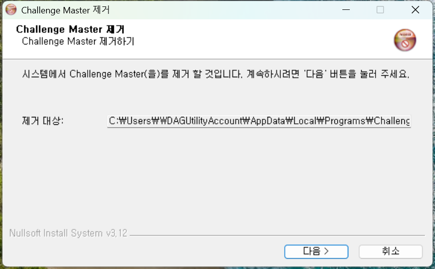
구성 요소 선택 화면에서 기록을 남길지 정하고 제거를 누릅니다.
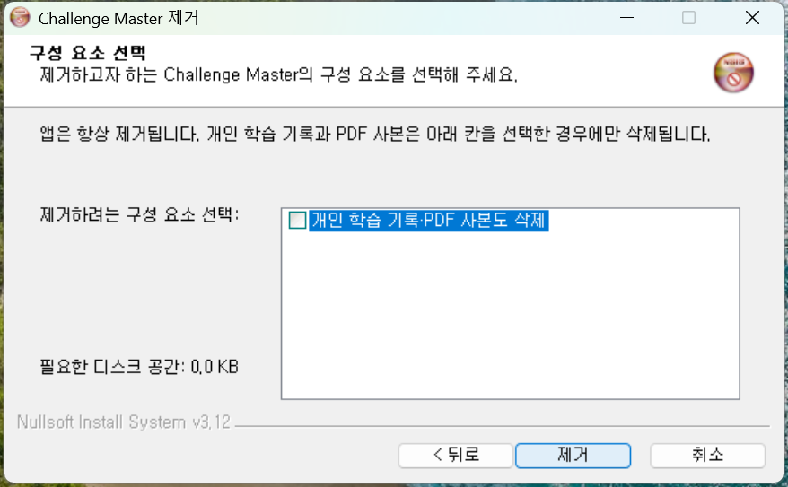
| 개인 학습 기록·PDF 사본도 삭제 | 결과 |
|---|---|
| 체크하지 않음 (처음 상태) | 프로그램만 지워지고 기록은 남습니다. 다시 설치하면 남은 기록을 불러오도록 만들어져 있습니다(재설치 후 복원은 시험 전). |
| 체크함 | 12절의 폴더가 통째로 지워집니다. 되돌릴 수 없습니다. |
제거 마침 화면이 나오면 닫음을 누릅니다.
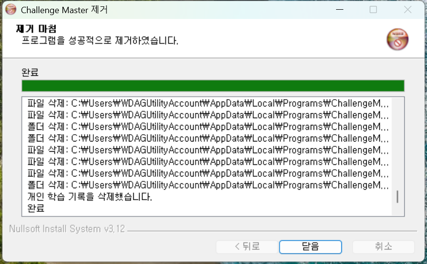